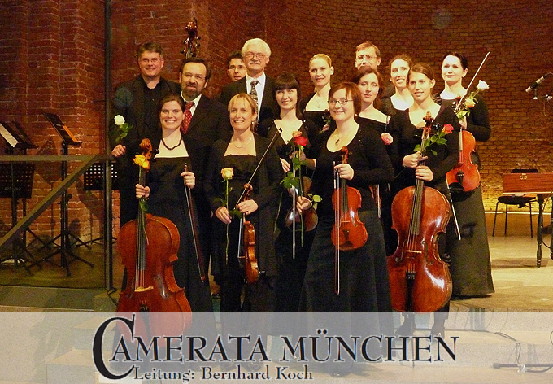

Kammerorchester
Camerata München
Das Kammerorchester unter der Leitung von Bernhard Koch
Kammerorchester
Das Kammerorchester unter der Leitung von Bernhard Koch

Das Kammerorchester Camerata München wurde im Herbst 1998 gegründet. Die Initiative kam von Münchner Streichervirtuosen, die unter der Leitung von Dirigent Bernhard Koch in den Konzerten der Jungen Münchner Symphoniker tätig waren. Am 26. Dezember 1998 stellte sich das Ensemble erstmalig überaus erfolgreich dem Münchner Publikum vor.
Das Ensemble steht unter der künstlerischen Leitung von Bernhard Koch, der es mittlerweile fest im Münchner Musikleben etablieren konnte.
Musiker der großen Münchner Symphonieorchester – Bayerische Staatsoper, Symphonieorchester des Bayerischen Rundfunks und Staatstheater am Gärtnerplatz – bereichern als hochgelobtes Kammermusik-Ensemble die Münchner Konzertszene.
Das Ensemble setzt sich regulär aus Solistinnen und Solisten folgender Häuser zusammen:
Das Repertoire der Camerata München spannt einen weiten Bogen – von den Meistern der Spätrenaissance wie Dowland und Purcell über die Bach-Familie und Mozart bis hin zu klassischen Werken Mendelssohn Bartholdys.
Die Camerata München konzertiert regelmäßig in der Münchner Markuskirche, im Großen Saal der Musikhochschule und besonders bei den Sommerserenaden im Brunnenhof der Residenz.
Weitere Auftritte finden in Schlössern sowie beim Theatron-Festival statt.
Termine:
Samstag, 3. Januar 2026, 21:00 Uhr
Sonntag, 4. Januar 2026, 21:00 Uhr
Ort: Cultural Conference Center of Heraklion, Kreta
Saal „Andreas und Maria Kalokairinou"
Dirigent: Myron Michailidis
Festliches Silvesterprogramm mit beliebten Werken.
Bernhard Koch leitet neben der Camerata München auch die Jungen Münchner Symphoniker. Erfahren Sie mehr über beide Ensembles.
Zu den Jungen Münchner Symphonikern